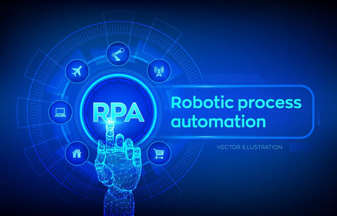
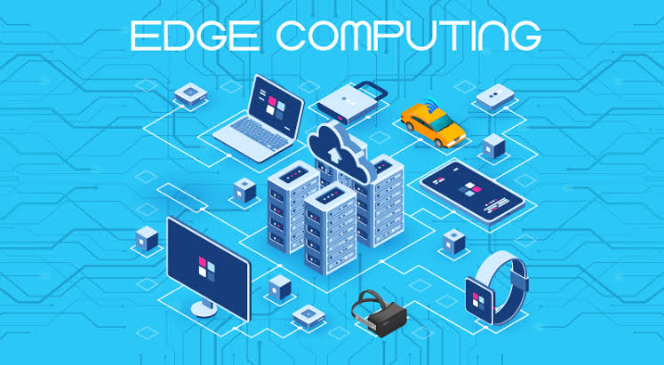

Artificial Intelligence (AI) and Machine Learning
1. Increasing Use of AI and Machine Learning.
2. Transparency Trends in AI.
3. Rising Emphasis on Data Security and Regulations.
4. The Overlap Between AI and IoT.
5. Augmented Intelligence is on the Rise.
Robotic Process Automation (RPA)

1. Rise of Intelligent Automation.
2. Focus on Employee experience.
3. Extension of RPA beyond Finance and Accounting.
4. Goodbye paperwork.
5. An amalgamation of automated and digital efforts.
Edge Computing

1. Edge meets more AI/ML.
2. Cloud and edge providers explore partnerships.
3. Edge management takes center stage.
4. IT and operational technology begin to converge.
5. Edge eases connected ecosystem adoption.
6. COVID-19 drives innovation at the edge.
7. Private 5G adoption increases.
8. Edge improves data security.
Quantum Computing

Quantum computing harnesses the phenomena of quantum mechanics to deliver a huge leap forward in computation to solve certain problems.
IBM designed quantum computers to solve complex problems that today's most powerful supercomputers cannot solve, and never will.
Virtual Reality and Augmented Reality
AR Trend #1: Smart Glasses
AR Trend #2: Avatars
AR Trend #3: 5G
AR Trend #4: Education
AR Trend #5: Theme Park Rides
AR Trend #6: LiDAR
Blockchain
1. The ongoing rise of enterprise blockchain.
2. The rise of NFTs.
3. Blockchain as-a-service.
4. Blockchain expertise a highly tradeable skill.
5. The cryptocurrency craziness continues – but stablecoins offer some sanctuary.
Cyber Security
1. Impact of Remote Work: New Threats and Solutions.
2. New Challenges from Ransomware.
3. Increased Use of Multi-Factor Authentication.
4. Continued Rise of AI.
5. Increased Attacks on Cloud Services.
6. Data Privacy as a Discipline.
7. COVID-19 Phishing Schemes.
8. Increased Need for Cybersecurity Professionals.
9. Insider Threats on the Rise.
10. Increased Need for Chief Security Officers.
Human augmentation
1. A survey by MarketsAndMarkets in 2019 projected the human augmentation market to grow from USD 70.9 billion in 2019 to USD 206.9 billion by 2024.
2. Human Augmentation: The behavioural analytics market is expected to reach $3 billion in revenue in 2030 globally, up from $230 million in 2019.
3. Gaming will lead the way with companies like Oculus and Magic Leap pushing the boundaries of imagination.
4. IoT trends in 2021 will disrupt some workforces and usher in greater human augmentation in work.
5. The world can expect to see further advancements in human augmentation software and devices.
6. 2021 will mark the beginning of a new era that will be powered by human augmentation technologies.